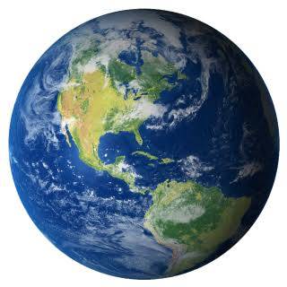
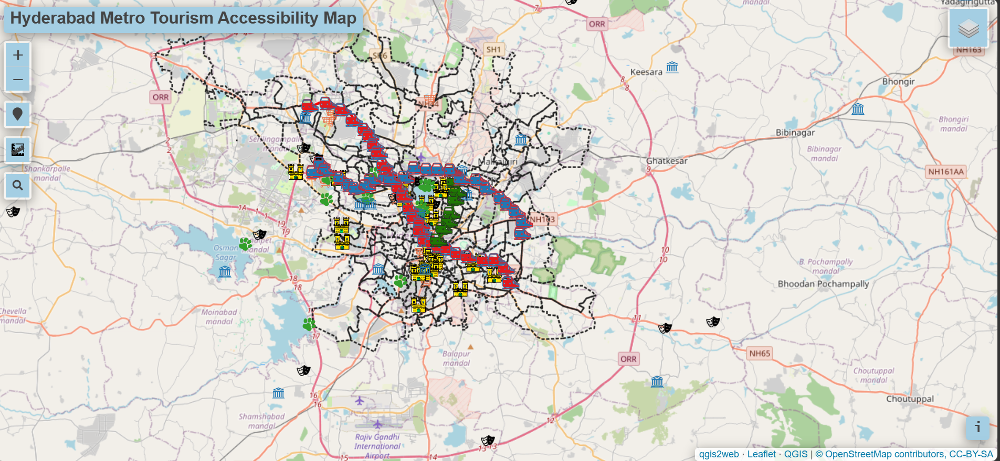
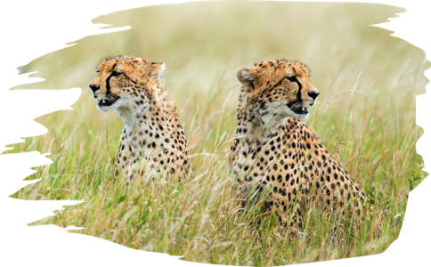
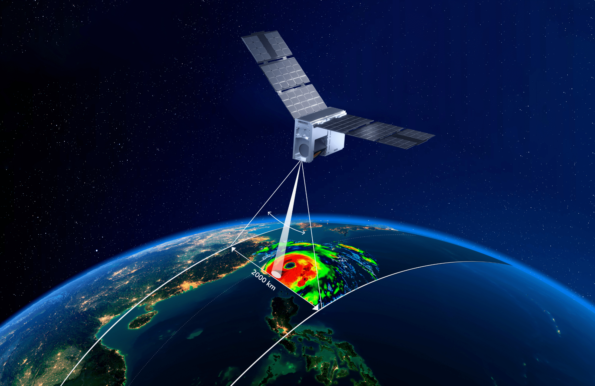
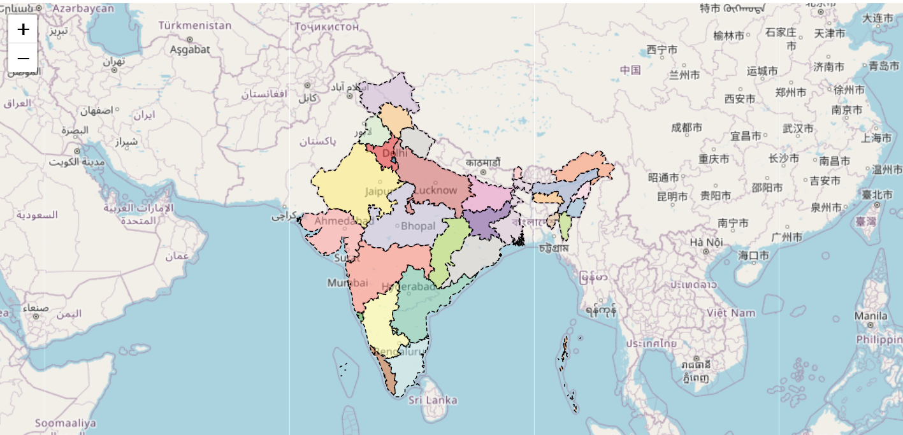
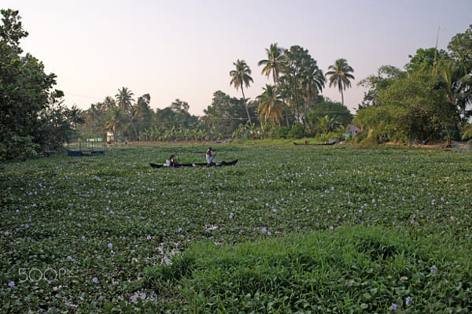
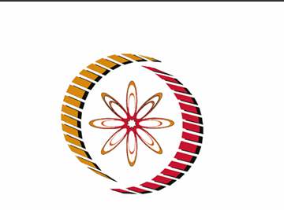
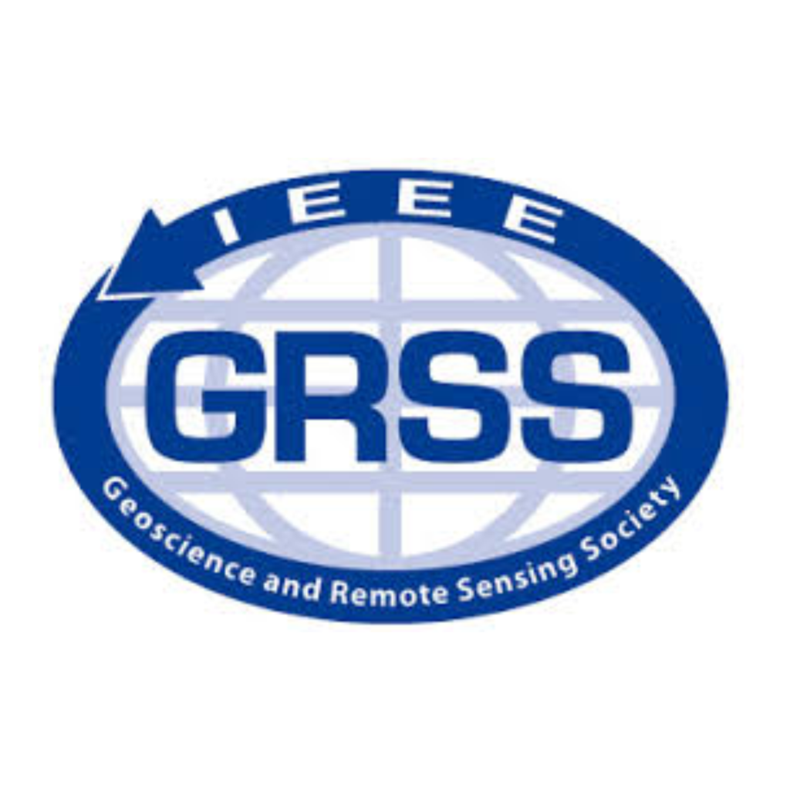

HELLO, I'M
V Abarnaa
|
I am a passionate GIS engineer who transform geospatial data into meaningful insights using Remote Sensing, GIS, Python and WebGIS technologies.

About Me
Hello! I'm Abarnaa, a Geoinformatics postgraduate from the Indian Institute of Space Science and Technology (IIST), Trivandrum, with a strong passion for GIS and Remote Sensing.I have hands-on experience working on a wide range of GIS and Remote Sensing projects involving spatial analysis, satellite image processing, cartography, web mapping, and geospatial data visualization. My technical skills include QGIS, ArcGIS, Google Earth Engine, Python, and R,enabling me to automate workflows and develop efficient geospatial solutions. I am dedicated to delivering accurate, reliable, and customized GIS solutions that help transform spatial data into actionable insights. Whether you need map creation, spatial analysis, remote sensing, or GIS automation, I am here to help bring your project to the next level.
Technical Skills
GIS and Remote Sensing
Programming and Database
GeoSpatial Analysis
WebGIS Development
Explore my Work

Metro Transit Mapping
Developed an interactive WebGIS application to visualize metro connectivity and analyze accessibility to major tourist destinations. The application enables users to explore routes through an intuitive map interface,improving travel planning and spatial decision-making.

Site Suitability Analysis for Cheetah Habitat Survival
Developed a GIS-based Cheetah Habitat Site Suitability Analysis for the Nallamala Forest region using Multi-Criteria Decision Analysis (MCDA) and the Analytical Hierarchy Process (AHP). Integrated remote sensing, topographic, climatic, and land cover datasets to identify potential habitats through weighted overlay analysis,supporting evidence-based wildlife conservation and habitat management.

Evaluation of Microwave Sounders using Simulations from Radiative Transfer Model
Developed a radiative transfer model-based workflow to simulate and validate satellite microwave brightness temperatures using ERA5 atmospheric data, ARTS, and passive microwave sounder observations for atmospheric remote sensing and weather forecasting applications.

Interactive Web Map
Developed an Interactive India States Web Map using Leaflet.js, HTML, CSS, JavaScript, and Bootstrap 5, and deployed it using GitHub Pages. The application enables users to search for states, automatically zoom and highlight selected regions, display state information through interactive popups, and dynamically showcase random state population statistics. This project strengthened my skills in web GIS development, interactive mapping, responsive UI design, and deploying web-based geospatial applications.

Water bodies Mapping
Developed a GIS-based Water Bodies Mapping and Area Estimation project for the Erode, Perundurai, and Chennimalai blocks of Erode District. The project involved extracting and digitizing water bodies from satellite imagery, validating them using Survey of India toposheets and field records, estimating their spatial extent, and developing a comprehensive geodatabase to support water resource management and planning..

Water Hyacinth Spread Detection and Analysis using Random Forest
Designed a remote sensing and machine learning framework to detect and map Water Hyacinth using Sentinel-2 imagery and the Random Forest algorithm in Google Earth Engine. The study evaluated seasonal spread, estimated infestation area, and generated spatial distribution maps to support environmental monitoring and invasive species management.
Shoreline analysis
Analyzed 20 years of shoreline and land use changes in Cochin using Remote Sensing, GIS, and DSAS. Applied supervised image classification and statistical shoreline analysis to assess coastal erosion, accretion, and urban expansion, supporting evidence-based coastal zone management.
Visualisation of Digital taxation using WebGIS
Designed and implemented a Web GIS application for visualizing and managing municipal property tax information by integrating cadastral parcel data with tax records. Developed interactive static and dynamic web maps using QGIS, GeoServer, and MapStore to support transparent and efficient property tax administration.
Professional Experience
Remote Sensing Analyst
Niruthi Climate and Ecosystems
Duration: September 2025 – Present
- Developed crop classification maps for Kharif and Rabi seasons using satellite imagery.
- Estimated crop-specific sowing, harvesting, and fallow periods.
- Performed crop transition analysis across agricultural seasons.
- Conducted GIS-based site suitability analysis for cheetah habitat in the Nallamala Forest region.
Research Intern
Space Application Center
Duration: August 2024 – May 2025
- Worked on ARTS(Atmospheric Radiative Transfer Simulator) for Simulations using Microsat 2B and Meteop-SG
- Developed Python scripts using NumPy, Matplotlib, GDAL, Rasterio, NetCDF4, and PyARTS for satellite data processing and visualization.
Outreach Intern
Department of Agriculture,Erode,Tamilnadu
Duration: May 2024 – June 2024
- Mapped water bodies across Erode, Chennimalai, and Perundurai blocks and created a geodatabase for spatial analysis.
Digitisation Intern
Indian School of Business
Duration: Nov 2023 – Jan 2024
- Digitized reserved forest boundaries for Sheopur district, Madhya Pradesh, and developed the associated spatial database.
Geospatial Analyst Intern
Europa Science and Research Development Group
Duration: July 2021 – Aug 2021
- Basic Geospatial workflows and hands on experience using Google Earth Engine was gained.
Let's Connect
I'm always open to discussing GIS,Remote Sensing,research collaboration and exciting opportunities.
Certifications and Trainings

{kind=link}
{kind=link}

{kind=link}
{kind=link}